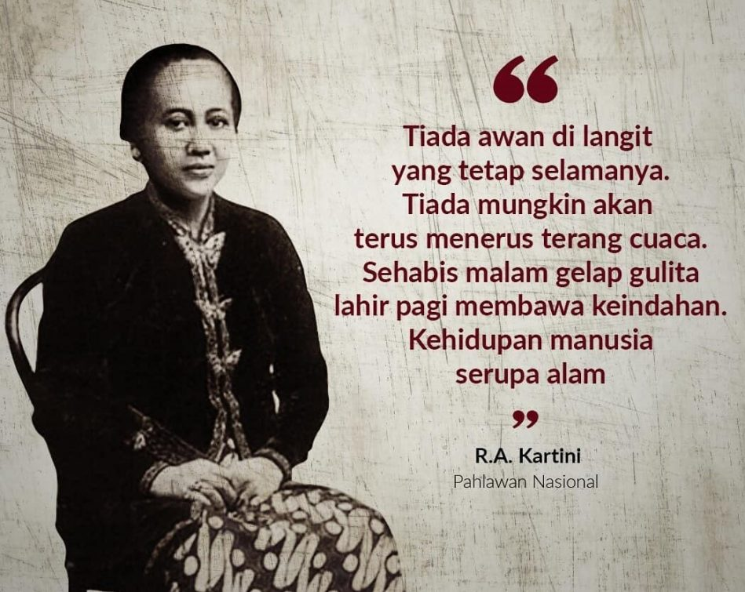
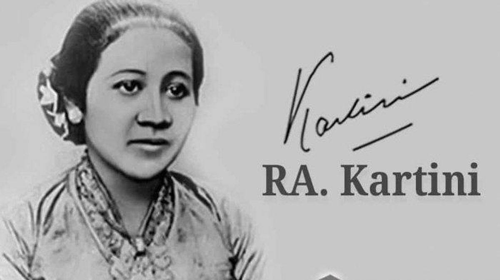

Raden Adjeng Kartini adalah pahlawan nasional Indonesia yang dikenal sebagai pelopor emansipasi wanita. Ia memperjuangkan hak pendidikan bagi perempuan agar bisa sejajar dengan laki-laki.
Kartini lahir pada 21 April 1879 di Jepara, Jawa Tengah. Ia berasal dari keluarga bangsawan Jawa. Sejak kecil, Kartini sudah menunjukkan semangat belajar yang tinggi dan gemar membaca buku-buku Belanda yang membuka wawasannya tentang kesetaraan.
Kartini menyadari ketimpangan gender pada masa itu. Ia mulai menulis surat kepada sahabat-sahabatnya di Belanda, yang kemudian dibukukan dengan judul "Habis Gelap Terbitlah Terang". Melalui tulisannya, Kartini menyuarakan pentingnya pendidikan dan kebebasan bagi perempuan Indonesia.
Kartini wafat pada usia muda, namun semangat perjuangannya terus hidup. Setiap tanggal 21 April diperingati sebagai Hari Kartini untuk mengenang jasa-jasanya dalam memperjuangkan hak perempuan Indonesia.
Video ini berisi ringkasan singkat tentang perjuangan R.A. Kartini dan semangatnya untuk memperjuangkan pendidikan bagi perempuan Indonesia.